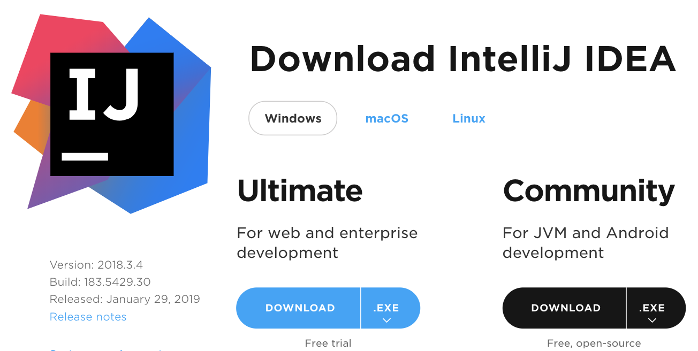

<!DOCTYPE HTML>
<html lang="zh-hans" >
    <head>
        <meta charset="UTF-8">
        <meta content="text/html; charset=utf-8" http-equiv="Content-Type">
        <title>JAVA开发环境的搭建 · 思讯</title>
        <meta http-equiv="X-UA-Compatible" content="IE=edge" />
        <meta name="description" content="">
        <meta name="generator" content="GitBook 3.2.3">
        <meta name="author" content="clare">
        
        
    
    <link rel="stylesheet" href="../gitbook/style.css">

    
            
                
                <link rel="stylesheet" href="../gitbook/gitbook-plugin-splitter/splitter.css">
                
            
                
                <link rel="stylesheet" href="../gitbook/gitbook-plugin-anchor-navigation-ex/style/plugin.css">
                
            
                
                <link rel="stylesheet" href="../gitbook/gitbook-plugin-prism/prism-tomorrow.css">
                
            
                
                <link rel="stylesheet" href="../gitbook/gitbook-plugin-search/search.css">
                
            
                
                <link rel="stylesheet" href="../gitbook/gitbook-plugin-fontsettings/website.css">
                
            
        

    

    
        
        <link rel="stylesheet" href="../styles/website.css">
        
    
        
    
        
    
        
    
        
    
        
    

        
    
    
    <meta name="HandheldFriendly" content="true"/>
    <meta name="viewport" content="width=device-width, initial-scale=1, user-scalable=no">
    <meta name="apple-mobile-web-app-capable" content="yes">
    <meta name="apple-mobile-web-app-status-bar-style" content="black">
    <link rel="apple-touch-icon-precomposed" sizes="152x152" href="../gitbook/images/apple-touch-icon-precomposed-152.png">
    <link rel="shortcut icon" href="../gitbook/images/favicon.ico" type="image/x-icon">

    
    <link rel="next" href="git.html" />
    
    

    </head>
    <body>
        
<div class="book">
    <div class="book-summary">
        
            
<div id="book-search-input" role="search">
    <input type="text" placeholder="输入并搜索" />
</div>

            
                <nav role="navigation">
                


<ul class="summary">
    
    
    
    

    

    
        
        
    
        <li class="chapter " data-level="1.1" data-path="../">
            
                <a href="../">
            
                    
                        <b>1.1.</b>
                    
                    介绍
            
                </a>
            

            
        </li>
    
        <li class="chapter " data-level="1.2" >
            
                <span>
            
                    
                        <b>1.2.</b>
                    
                    基础环境搭建
            
                </span>
            

            
            <ul class="articles">
                
    
        <li class="chapter active" data-level="1.2.1" data-path="dev.html">
            
                <a href="dev.html">
            
                    
                        <b>1.2.1.</b>
                    
                    JAVA开发环境的搭建
            
                </a>
            

            
        </li>
    
        <li class="chapter " data-level="1.2.2" data-path="git.html">
            
                <a href="git.html">
            
                    
                        <b>1.2.2.</b>
                    
                    Git的使用
            
                </a>
            

            
        </li>
    

            </ul>
            
        </li>
    
        <li class="chapter " data-level="1.3" >
            
                <span>
            
                    
                        <b>1.3.</b>
                    
                    基础平台
            
                </span>
            

            
            <ul class="articles">
                
    
        <li class="chapter " data-level="1.3.1" data-path="grpc.html">
            
                <a href="grpc.html">
            
                    
                        <b>1.3.1.</b>
                    
                    GRPC的使用
            
                </a>
            

            
        </li>
    
        <li class="chapter " data-level="1.3.2" data-path="redis.html">
            
                <a href="redis.html">
            
                    
                        <b>1.3.2.</b>
                    
                    Redis的使用
            
                </a>
            

            
        </li>
    
        <li class="chapter " data-level="1.3.3" data-path="mybatis-plus.html">
            
                <a href="mybatis-plus.html">
            
                    
                        <b>1.3.3.</b>
                    
                    Mybatis-plus的使用
            
                </a>
            

            
        </li>
    
        <li class="chapter " data-level="1.3.4" data-path="kafka.html">
            
                <a href="kafka.html">
            
                    
                        <b>1.3.4.</b>
                    
                    Kafka的使用
            
                </a>
            

            
        </li>
    
        <li class="chapter " data-level="1.3.5" data-path="rabiit.html">
            
                <a href="rabiit.html">
            
                    
                        <b>1.3.5.</b>
                    
                    RabbitMQ的使用
            
                </a>
            

            
        </li>
    
        <li class="chapter " data-level="1.3.6" data-path="mongo.html">
            
                <a href="mongo.html">
            
                    
                        <b>1.3.6.</b>
                    
                    MogoDB的使用
            
                </a>
            

            
        </li>
    
        <li class="chapter " data-level="1.3.7" data-path="sharding-jdbc.html">
            
                <a href="sharding-jdbc.html">
            
                    
                        <b>1.3.7.</b>
                    
                    Sharding-Jdbc的使用
            
                </a>
            

            
        </li>
    

            </ul>
            
        </li>
    
        <li class="chapter " data-level="1.4" >
            
                <span>
            
                    
                        <b>1.4.</b>
                    
                    开发规范
            
                </span>
            

            
            <ul class="articles">
                
    
        <li class="chapter " data-level="1.4.1" data-path="mock.html">
            
                <a href="mock.html">
            
                    
                        <b>1.4.1.</b>
                    
                    测试驱动开发(TDD)
            
                </a>
            

            
        </li>
    
        <li class="chapter " data-level="1.4.2" data-path="validate.html">
            
                <a href="validate.html">
            
                    
                        <b>1.4.2.</b>
                    
                    数据校验
            
                </a>
            

            
        </li>
    
        <li class="chapter " data-level="1.4.3" data-path="../standard/swagger2.html">
            
                <a href="../standard/swagger2.html">
            
                    
                        <b>1.4.3.</b>
                    
                    Swagger2
            
                </a>
            

            
        </li>
    
        <li class="chapter " data-level="1.4.4" data-path="../standard/logging.html">
            
                <a href="../standard/logging.html">
            
                    
                        <b>1.4.4.</b>
                    
                    日志记录及GELF的集成
            
                </a>
            

            
        </li>
    

            </ul>
            
        </li>
    
        <li class="chapter " data-level="1.5" >
            
                <span>
            
                    
                        <b>1.5.</b>
                    
                    帮助文档
            
                </span>
            

            
            <ul class="articles">
                
    
        <li class="chapter " data-level="1.5.1" data-path="../ops/use_dns.html">
            
                <a href="../ops/use_dns.html">
            
                    
                        <b>1.5.1.</b>
                    
                    本地开发环境增加默认搜索域
            
                </a>
            

            
        </li>
    

            </ul>
            
        </li>
    
        <li class="chapter " data-level="1.6" >
            
                <span>
            
                    
                        <b>1.6.</b>
                    
                    运维操作手册
            
                </span>
            

            
            <ul class="articles">
                
    
        <li class="chapter " data-level="1.6.1" data-path="../ops/standard.html">
            
                <a href="../ops/standard.html">
            
                    
                        <b>1.6.1.</b>
                    
                    系统标准化
            
                </a>
            

            
        </li>
    
        <li class="chapter " data-level="1.6.2" data-path="../ops/yum.html">
            
                <a href="../ops/yum.html">
            
                    
                        <b>1.6.2.</b>
                    
                    本地YUM源搭建
            
                </a>
            

            
        </li>
    
        <li class="chapter " data-level="1.6.3" data-path="../ops/k8s-node.html">
            
                <a href="../ops/k8s-node.html">
            
                    
                        <b>1.6.3.</b>
                    
                    阿里云K8S主机标准化
            
                </a>
            

            
        </li>
    
        <li class="chapter " data-level="1.6.4" data-path="../ops/gitlab-ci.html">
            
                <a href="../ops/gitlab-ci.html">
            
                    
                        <b>1.6.4.</b>
                    
                    GitLabCI/CD环境搭建
            
                </a>
            

            
        </li>
    

            </ul>
            
        </li>
    
        <li class="chapter " data-level="1.7" >
            
                <span>
            
                    
                        <b>1.7.</b>
                    
                    基础服务信息
            
                </span>
            

            
            <ul class="articles">
                
    
        <li class="chapter " data-level="1.7.1" data-path="../serviceinfo/dev.html">
            
                <a href="../serviceinfo/dev.html">
            
                    
                        <b>1.7.1.</b>
                    
                    本地开发环境
            
                </a>
            

            
        </li>
    
        <li class="chapter " data-level="1.7.2" data-path="../serviceinfo/test.html">
            
                <a href="../serviceinfo/test.html">
            
                    
                        <b>1.7.2.</b>
                    
                    阿里测试环境
            
                </a>
            

            
        </li>
    
        <li class="chapter " data-level="1.7.3" data-path="../serviceinfo/dev.html">
            
                <a href="../serviceinfo/dev.html">
            
                    
                        <b>1.7.3.</b>
                    
                    测试CI/CD
            
                </a>
            

            
        </li>
    

            </ul>
            
        </li>
    

    

    <li class="divider"></li>

    <li>
        <a href="https://www.gitbook.com" target="blank" class="gitbook-link">
            本书使用 GitBook 发布
        </a>
    </li>
</ul>


                </nav>
            
        
    </div>

    <div class="book-body">
        
            <div class="body-inner">
                
                    

<div class="book-header" role="navigation">
    

    <!-- Title -->
    <h1>
        <i class="fa fa-circle-o-notch fa-spin"></i>
        <a href=".." >JAVA开发环境的搭建</a>
    </h1>
</div>


                    <div class="page-wrapper" tabindex="-1" role="main">
                        <div class="page-inner">
                            
<div id="book-search-results">
    <div class="search-noresults">
    
                                <section class="normal markdown-section">
                                
                                <div id="anchor-navigation-ex-navbar"><i class="fa fa-navicon"></i><ul><li><span class="title-icon "></span><a href="#&#x7B2C;&#x4E00;&#x7AE0;-java&#x5F00;&#x53D1;&#x73AF;&#x5883;&#x7684;&#x642D;&#x5EFA;"><b>1. </b>&#x7B2C;&#x4E00;&#x7AE0; JAVA&#x5F00;&#x53D1;&#x73AF;&#x5883;&#x7684;&#x642D;&#x5EFA;</a></li><ul><li><span class="title-icon "></span><a href="#1-&#x5B89;&#x88C5;&#x5F00;&#x53D1;&#x73AF;&#x5883;"><b>1.1. </b>1 &#x5B89;&#x88C5;&#x5F00;&#x53D1;&#x73AF;&#x5883;</a></li><ul><li><span class="title-icon "></span><a href="#11-&#x5B89;&#x88C5;jdk"><b>1.1.1. </b>1.1 &#x5B89;&#x88C5;JDK</a></li><li><span class="title-icon "></span><a href="#12-&#x5F00;&#x53D1;&#x5DE5;&#x5177;&#x7684;&#x5B89;&#x88C5;"><b>1.1.2. </b>1.2 &#x5F00;&#x53D1;&#x5DE5;&#x5177;&#x7684;&#x5B89;&#x88C5;</a></li><li><span class="title-icon "></span><a href="#13-&#x5B89;&#x88C5;&#x6D4F;&#x89C8;&#x5668;--&#x63A5;&#x53E3;&#x8C03;&#x8BD5;&#x5DE5;&#x5177;-postman"><b>1.1.3. </b>1.3 &#x5B89;&#x88C5;&#x6D4F;&#x89C8;&#x5668; &amp;&amp; &#x63A5;&#x53E3;&#x8C03;&#x8BD5;&#x5DE5;&#x5177; Postman</a></li><li><span class="title-icon "></span><a href="#14-&#x5B89;&#x88C5;&#x53CA;&#x914D;&#x7F6E;maven&#x4ED3;&#x5E93;"><b>1.1.4. </b>1.4 &#x5B89;&#x88C5;&#x53CA;&#x914D;&#x7F6E;Maven&#x4ED3;&#x5E93;</a></li></ul></ul></ul></div><a href="#&#x7B2C;&#x4E00;&#x7AE0;-java&#x5F00;&#x53D1;&#x73AF;&#x5883;&#x7684;&#x642D;&#x5EFA;" id="anchorNavigationExGoTop"><i class="fa fa-arrow-up"></i></a><h1 id="&#x7B2C;&#x4E00;&#x7AE0;-java&#x5F00;&#x53D1;&#x73AF;&#x5883;&#x7684;&#x642D;&#x5EFA;"><a name="&#x7B2C;&#x4E00;&#x7AE0;-java&#x5F00;&#x53D1;&#x73AF;&#x5883;&#x7684;&#x642D;&#x5EFA;" class="anchor-navigation-ex-anchor" href="#&#x7B2C;&#x4E00;&#x7AE0;-java&#x5F00;&#x53D1;&#x73AF;&#x5883;&#x7684;&#x642D;&#x5EFA;"><i class="fa fa-link" aria-hidden="true"></i></a>1. &#x7B2C;&#x4E00;&#x7AE0; JAVA&#x5F00;&#x53D1;&#x73AF;&#x5883;&#x7684;&#x642D;&#x5EFA;</h1>
<h2 id="1-&#x5B89;&#x88C5;&#x5F00;&#x53D1;&#x73AF;&#x5883;"><a name="1-&#x5B89;&#x88C5;&#x5F00;&#x53D1;&#x73AF;&#x5883;" class="anchor-navigation-ex-anchor" href="#1-&#x5B89;&#x88C5;&#x5F00;&#x53D1;&#x73AF;&#x5883;"><i class="fa fa-link" aria-hidden="true"></i></a>1.1. 1 &#x5B89;&#x88C5;&#x5F00;&#x53D1;&#x73AF;&#x5883;</h2>
<p>&#x4FD7;&#x8BDD;&#x8BF4;&#x7684;&#x597D;&#xFF0C;&#x5DE5;&#x6B32;&#x5584;&#x5176;&#x4E8B;&#xFF0C;&#x5FC5;&#x5148;&#x5229;&#x5176;&#x5668;&#xFF0C;&#x4E00;&#x4E2A;&#x597D;&#x7684;&#x5DE5;&#x5177;&#x662F;Java&#x5F00;&#x53D1;&#x7684;&#x4E00;&#x5927;&#x5229;&#x5668;&#xFF0C;&#x6211;&#x4EEC;&#x9009;&#x62E9;&#x793E;&#x533A;&#x4F7F;&#x7528;&#x6700;&#x5E7F;&#x6CDB;&#x7684;&#x4EE3;&#x7801;&#x7BA1;&#x7406;&#x5DE5;&#x5177;Git&#x548C;&#x96C6;&#x6210;&#x5F00;&#x53D1;&#x5DE5;&#x5177;IDEA IDE&#x3002;</p>
<h3 id="11-&#x5B89;&#x88C5;jdk"><a name="11-&#x5B89;&#x88C5;jdk" class="anchor-navigation-ex-anchor" href="#11-&#x5B89;&#x88C5;jdk"><i class="fa fa-link" aria-hidden="true"></i></a>1.1.1. 1.1 &#x5B89;&#x88C5;JDK</h3>
<ul>
<li><a href="https://www.oracle.com/technetwork/java/javase/downloads/jdk8-downloads-2133151.html" target="_blank">&#x4E0B;&#x8F7D; JDK 1.8</a></li>
</ul>
<p>
&#x6253;&#x5F00;&#x9875;&#x9762;,&#x70B9;&#x51FB;<code>Accept License Agreement</code>&#x3002;</p>
<p><code>windows 64&#x4F4D;</code> &#x70B9;&#x51FB; <code>jdk-8u201-windows-x64.exe</code></p>
<p><code>windows 32&#x4F4D;</code> &#x70B9;&#x51FB; <code>jdk-8u201-windows-i586.exe</code></p>
<ul>
<li><p>&#x5B89;&#x88C5;</p>
<p>JDK &#x5B89;&#x88C5;&#x5728;&#x5B89;&#x88C5;&#x5B98;&#x65B9;&#x6307;&#x5F15;&#x5B89;&#x88C5;&#x5373;&#x53EF;&#xFF0C;&#x5B89;&#x88C5;&#x5B8C;&#x6BD5;&#x786E;&#x8BA4;&#x4EE5;&#x4E0B;&#x51E0;&#x70B9;</p>
<ol>
<li>&#x73AF;&#x5883;&#x53D8;&#x91CF; JAVA_HOME</li>
<li>&#x5728;&#x7EC8;&#x7AEF;&#x4E0B;&#x786E;&#x8BA4;Java&#x7684;&#x7248;&#x672C;</li>
</ol>
</li>
</ul>
<pre class="language-"><code class="lang-bash">java -version

java version <span class="token string">&quot;1.8.0_31&quot;</span>
Java<span class="token punctuation">(</span>TM<span class="token punctuation">)</span> SE Runtime Environment <span class="token punctuation">(</span>build <span class="token number">1.8</span>.0_31-b13<span class="token punctuation">)</span>
Java HotSpot<span class="token punctuation">(</span>TM<span class="token punctuation">)</span> <span class="token number">64</span>-Bit Server VM <span class="token punctuation">(</span>build <span class="token number">25.31</span>-b07, mixed mode<span class="token punctuation">)</span>
</code></pre>
<h3 id="12-&#x5F00;&#x53D1;&#x5DE5;&#x5177;&#x7684;&#x5B89;&#x88C5;"><a name="12-&#x5F00;&#x53D1;&#x5DE5;&#x5177;&#x7684;&#x5B89;&#x88C5;" class="anchor-navigation-ex-anchor" href="#12-&#x5F00;&#x53D1;&#x5DE5;&#x5177;&#x7684;&#x5B89;&#x88C5;"><i class="fa fa-link" aria-hidden="true"></i></a>1.1.2. 1.2 &#x5F00;&#x53D1;&#x5DE5;&#x5177;&#x7684;&#x5B89;&#x88C5;</h3>
<ul>
<li><a href="https://www.jetbrains.com/idea/download" target="_blank">&#x4E0B;&#x8F7D; IDEA IDE</a></li>
</ul>
<p> (&#x8981;&#x6C42; IDEA IDE 2016.3.0 &#x6216;&#x4EE5;&#x4E0A;&#x7248;&#x672C;)</p>
<ul>
<li>&#x5B89;&#x88C5;
IDEA IDE &#x7684;&#x5B89;&#x88C5;&#x8F83;&#x4E3A;&#x7B80;&#x5355;&#xFF0C;&#x786E;&#x5B9E;&#x5B89;&#x88C5;&#x5C31;&#x884C;&#x4E86;&#x3002;</li>
</ul>
<h3 id="13-&#x5B89;&#x88C5;&#x6D4F;&#x89C8;&#x5668;--&#x63A5;&#x53E3;&#x8C03;&#x8BD5;&#x5DE5;&#x5177;-postman"><a name="13-&#x5B89;&#x88C5;&#x6D4F;&#x89C8;&#x5668;--&#x63A5;&#x53E3;&#x8C03;&#x8BD5;&#x5DE5;&#x5177;-postman" class="anchor-navigation-ex-anchor" href="#13-&#x5B89;&#x88C5;&#x6D4F;&#x89C8;&#x5668;--&#x63A5;&#x53E3;&#x8C03;&#x8BD5;&#x5DE5;&#x5177;-postman"><i class="fa fa-link" aria-hidden="true"></i></a>1.1.3. 1.3 &#x5B89;&#x88C5;&#x6D4F;&#x89C8;&#x5668; &amp;&amp; &#x63A5;&#x53E3;&#x8C03;&#x8BD5;&#x5DE5;&#x5177; Postman</h3>
<ul>
<li>&#x4F5C;&#x4E3A;Java&#x5F00;&#x53D1;&#x8005;&#xFF0C;&#x4F7F;&#x7528;&#x4EC0;&#x4E48;&#x6D4F;&#x89C8;&#x5668;&#x80FD;&#x63D0;&#x4F9B;&#x4F60;&#x7684;&#x5DE5;&#x4F5C;&#x6548;&#x7387;&#x5462;&#xFF0C;&#x6211;&#x63A8;&#x8350;Chrome&#xFF0C;&#x6216;&#x8005;&#x4EE5;Chrome&#x4E3A;&#x5185;&#x6838;&#x7684;&#x5176;&#x5B83;&#x6D4F;&#x89C8;&#x5668;&#xFF0C;&#x7528;chrome&#x7684;&#x76EE;&#x7684;&#x662F;&#x91CC;&#x9762;&#x6709;&#x5F88;&#x591A;&#x5F00;&#x53D1;&#x7528;&#x7684;&#x5DE5;&#x5177;&#x53CA;&#x63D2;&#x4EF6;&#xFF0C;&#x5982;Postman&#x3002;</li>
</ul>
<h3 id="14-&#x5B89;&#x88C5;&#x53CA;&#x914D;&#x7F6E;maven&#x4ED3;&#x5E93;"><a name="14-&#x5B89;&#x88C5;&#x53CA;&#x914D;&#x7F6E;maven&#x4ED3;&#x5E93;" class="anchor-navigation-ex-anchor" href="#14-&#x5B89;&#x88C5;&#x53CA;&#x914D;&#x7F6E;maven&#x4ED3;&#x5E93;"><i class="fa fa-link" aria-hidden="true"></i></a>1.1.4. 1.4 &#x5B89;&#x88C5;&#x53CA;&#x914D;&#x7F6E;Maven&#x4ED3;&#x5E93;</h3>
<ul>
<li><p><a href="http://mirrors.tuna.tsinghua.edu.cn/apache/maven/maven-3/3.6.0/binaries/apache-maven-3.6.0-bin.zip" target="_blank">&#x4E0B;&#x8F7D; Maven</a></p>
</li>
<li><p>Maven&#x7684;&#x914D;&#x7F6E;</p>
</li>
</ul>
<p>&#x5C06;&#x5B89;&#x88C5;&#x5305;&#x4E0B;&#x8F7D;&#x540E;&#x5E76;&#x89E3;&#x538B;&#x81F3;&#x5F53;&#x524D;&#x76EE;&#x5F55;,&#x8BBE;&#x7F6E;Maven&#x7684;&#x73AF;&#x5883;&#x53D8;&#x91CF; <code>MAVEN_HOME=D:\mvn\apache-maven-3.6.0</code>
PATH&#x4E2D;&#x6DFB;&#x52A0;<code>D:\mvn\apache-maven-3.6.0\bin</code></p>
<p>&#x9A8C;&#x8BC1;maven&#x662F;&#x5426;&#x5B89;&#x88C5;&#x6210;&#x529F;&#xFF1A;</p>
<p>&#x547D;&#x4EE4;&#x884C; <code>mvn -v</code></p>
<p></p>
<p>&#x66F4;&#x6362;maven&#x4E2D;&#x7684; <code>settings.xml</code> &#x4E0B;&#x8F7D; <a href="pkg/settings.xml">settings.xml</a> &#x66FF;&#x6362;&#x89E3;&#x538B;&#x5305;&#x4E0B;&#x7684;conf&#x4E2D;&#x7684;<code>settings.xml</code> &#x5E76;&#x8BBE;&#x7F6E;&#x73AF;&#x5883;&#x53D8;&#x91CF;<code>NEXUS_PATH=http://nexus.sixunyun.com.cn</code> 
&#x672C;&#x5730;&#x73AF;&#x5883;&#x9ED8;&#x8BA4;&#x4F7F;&#x7528;local <code>SPRING_PROFILES_ACTIVE=local</code>&#x3002;</p>

                                
                                </section>
                            
    </div>
    <div class="search-results">
        <div class="has-results">
            
            <h1 class="search-results-title"><span class='search-results-count'></span> results matching "<span class='search-query'></span>"</h1>
            <ul class="search-results-list"></ul>
            
        </div>
        <div class="no-results">
            
            <h1 class="search-results-title">No results matching "<span class='search-query'></span>"</h1>
            
        </div>
    </div>
</div>

                        </div>
                    </div>
                
            </div>

            
                
                
                <a href="git.html" class="navigation navigation-next navigation-unique" aria-label="Next page: Git的使用">
                    <i class="fa fa-angle-right"></i>
                </a>
                
            
        
    </div>

    <script>
        var gitbook = gitbook || [];
        gitbook.push(function() {
            gitbook.page.hasChanged({"page":{"title":"JAVA开发环境的搭建","level":"1.2.1","depth":2,"next":{"title":"Git的使用","level":"1.2.2","depth":2,"path":"basics/git.md","ref":"basics/git.md","articles":[]},"previous":{"title":"基础环境搭建","level":"1.2","depth":1,"ref":"","articles":[{"title":"JAVA开发环境的搭建","level":"1.2.1","depth":2,"path":"basics/dev.md","ref":"basics/dev.md","articles":[]},{"title":"Git的使用","level":"1.2.2","depth":2,"path":"basics/git.md","ref":"basics/git.md","articles":[]}]},"dir":"ltr"},"config":{"plugins":["github","-donate","splitter","anchor-navigation-ex","-sharing","sharing-plus","-highlight","prism"],"styles":{"website":"styles/website.css","pdf":"styles/pdf.css","epub":"styles/epub.css","mobi":"styles/mobi.css","ebook":"styles/ebook.css","print":"styles/print.css"},"pluginsConfig":{"prism":{"css":["prismjs/themes/prism-tomorrow.css"]},"styles":{"website":"styles/website.css"},"github":{"url":"https://github.com/ClareChu"},"splitter":{},"search":{},"sharing-plus":{"qq":false,"all":["facebook","google","twitter","instapaper","linkedin","pocket","stumbleupon"],"douban":false,"facebook":true,"weibo":false,"instapaper":false,"whatsapp":false,"hatenaBookmark":false,"twitter":true,"messenger":false,"line":false,"vk":false,"pocket":true,"google":false,"viber":false,"stumbleupon":false,"qzone":false,"linkedin":false},"lunr":{"maxIndexSize":1000000,"ignoreSpecialCharacters":false},"fontsettings":{"theme":"white","family":"serif","size":2},"anchor-navigation-ex":{"associatedWithSummary":false,"float":{"floatIcon":"fa fa-navicon","level1Icon":"","level2Icon":"","level3Icon":"","showLevelIcon":false},"mode":"float","multipleH1":true,"pageTop":{"level1Icon":"fa fa-hand-o-right","level2Icon":"fa fa-hand-o-right","level3Icon":"fa fa-hand-o-right","showLevelIcon":false},"printLog":false,"showGoTop":true,"showLevel":true},"sharing":{"qq":false,"all":["weibo","qq","qzone"],"douban":false,"facebook":false,"weibo":false,"instapaper":false,"whatsapp":false,"hatenaBookmark":false,"twitter":false,"messenger":false,"line":false,"vk":false,"pocket":false,"google":false,"viber":false,"stumbleupon":false,"qzone":false,"linkedin":false},"theme-default":{"styles":{"website":"styles/website.css","pdf":"styles/pdf.css","epub":"styles/epub.css","mobi":"styles/mobi.css","ebook":"styles/ebook.css","print":"styles/print.css"},"showLevel":true}},"theme":"default","author":"clare","pdf":{"pageNumbers":true,"fontSize":12,"fontFamily":"Arial","paperSize":"a4","chapterMark":"pagebreak","pageBreaksBefore":"/","margin":{"right":62,"left":62,"top":56,"bottom":56}},"structure":{"langs":"LANGS.md","readme":"README.md","glossary":"GLOSSARY.md","summary":"SUMMARY.md"},"variables":{},"title":"思讯","language":"zh-hans","links":{"sidebar":{}},"gitbook":"3.2.3","description":""},"file":{"path":"basics/dev.md","mtime":"2019-08-28T16:53:46.160Z","type":"markdown"},"gitbook":{"version":"3.2.3","time":"2019-08-28T17:07:01.089Z"},"basePath":"..","book":{"language":""}});
        });
    </script>
</div>

        
    <script src="../gitbook/gitbook.js"></script>
    <script src="../gitbook/theme.js"></script>
    
        
        <script src="../gitbook/gitbook-plugin-github/plugin.js"></script>
        
    
        
        <script src="../gitbook/gitbook-plugin-splitter/splitter.js"></script>
        
    
        
        <script src="../gitbook/gitbook-plugin-sharing-plus/buttons.js"></script>
        
    
        
        <script src="../gitbook/gitbook-plugin-search/search-engine.js"></script>
        
    
        
        <script src="../gitbook/gitbook-plugin-search/search.js"></script>
        
    
        
        <script src="../gitbook/gitbook-plugin-lunr/lunr.min.js"></script>
        
    
        
        <script src="../gitbook/gitbook-plugin-lunr/search-lunr.js"></script>
        
    
        
        <script src="../gitbook/gitbook-plugin-fontsettings/fontsettings.js"></script>
        
    

    </body>
</html>

